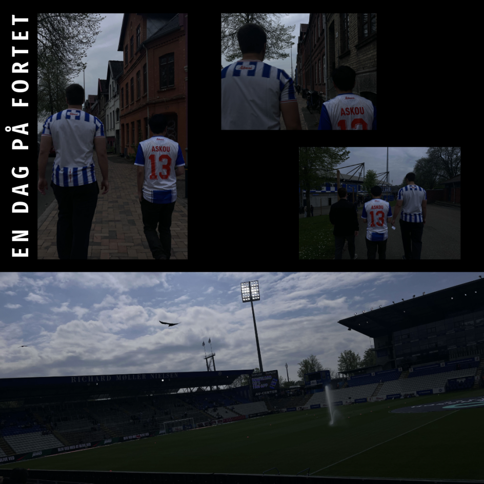
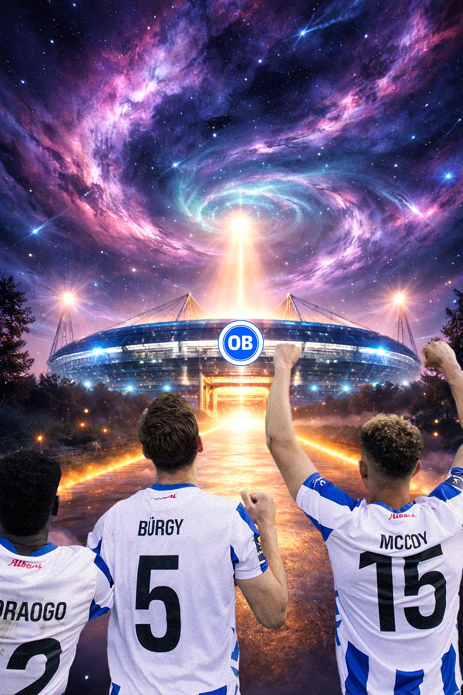
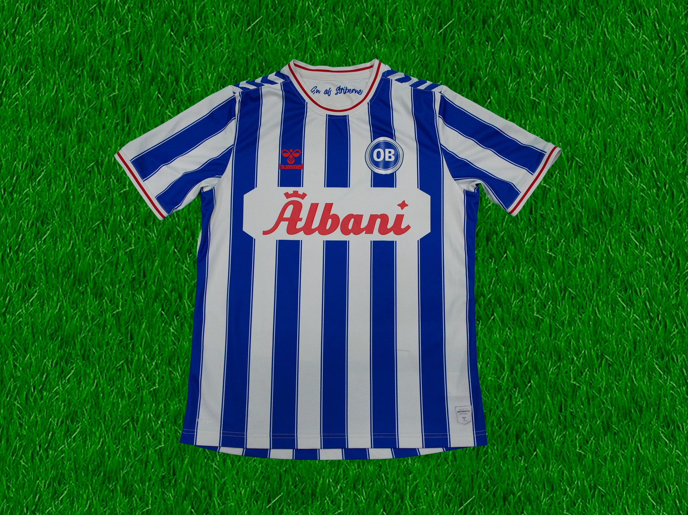
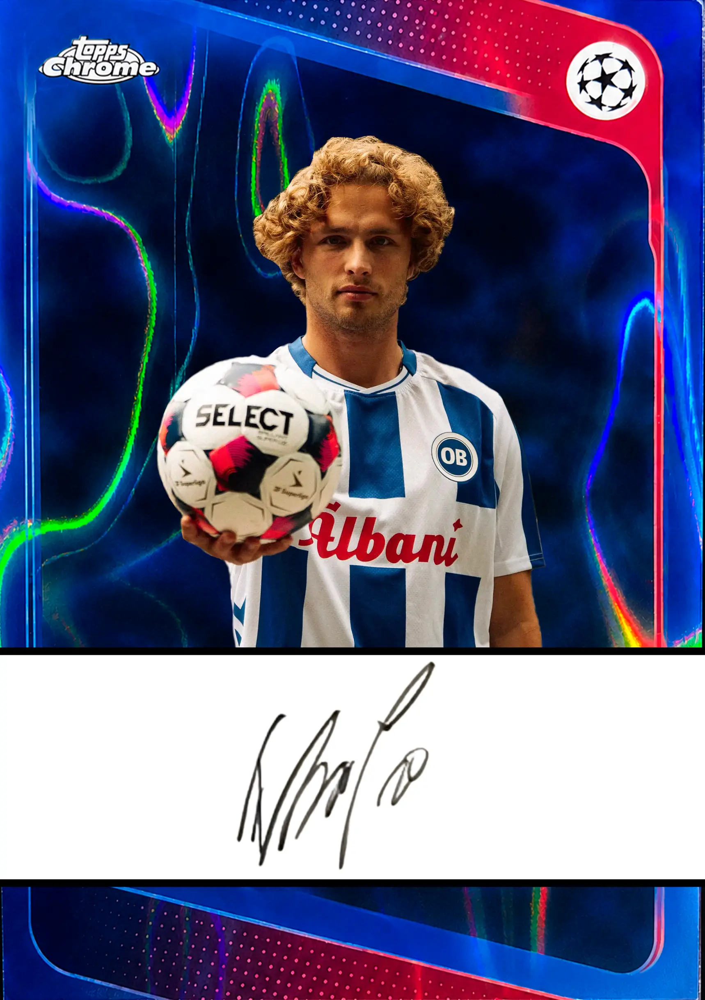
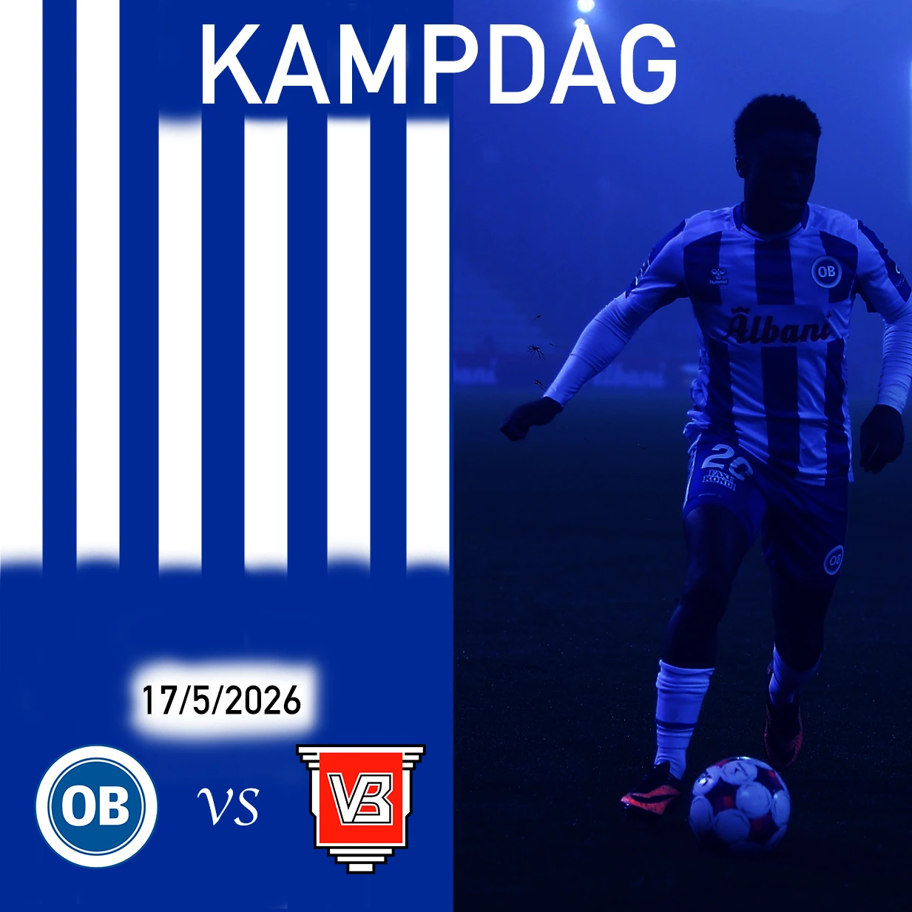

Showcase


Patrick Gollubits - Multimediadesigner
I am passionate about sports and design. Ever since I was a child, I have followed Odense Boldklub and still do to this day. The club is a part of who I am.
With a background in the military and three deployments (One as a leader). I have developed strong skills in leadership, communication, and decision-making. You can expect a collaboration with a strong and dedicated profile.
What sets me apart? I bring deep industry insight and am always up to date with the latest sports trends. With a long background as an active athlete, I truly understand the culture. Furthermore, my experience in leadership, entrepreneurship, and international work means I am well-prepared for, and experienced with, traveling abroad.




